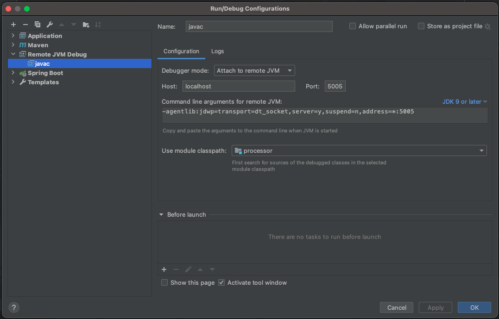
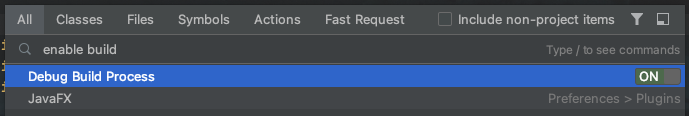
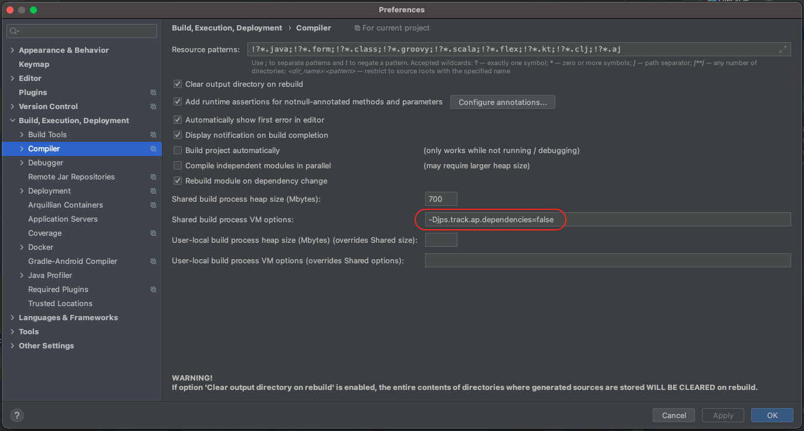

前话
干活的时候，很多时候都是增删改查，重复劳动。甚至有的东西，就纯粹是一个模式，CV大法。
比如从数据库的Entity类，转换成给前端的数据，很多时候是原封不动，或者做一些简单的编辑。
那既然java的注解那么强大，为啥不琢磨琢磨整一个注解来解决这些事情呢？
原材料
tools.jar
这个在1.8以及之前的jdk包中，是可以在安装目录下找到的。
但是之后的版本中就没有了，我这里用的是java 11，但是用1.8版本的tools.jar也是没毛病的。
AbstractProcessor
这个是注解处理器，在编译时通过注解来生成一些代码，就需要用这个。比如大名鼎鼎的lombok也是通过这个实现了很多功能。
开始
AbstractProcessor
这个就是注解处理器，他有两个方法，需要我们实现。
此外，还需要配置该注解处理器感兴趣的注解以及指定java版本。
后者可以通过注解或者实现AbstractProcessor方法两种方式来实现。
配置
SupportedAnnotationTypes
配置注解处理器感兴趣的注解，这里可以通过实现
@Override
public Set<String> getSupportedAnnotationTypes() {
}
方法来配置。
SupportedSourceVersion
设定java版本，这里也可以通过实现
@Override
public SourceVersion getSupportedSourceVersion() {
}
来配置。
init
获取注解处理器需要用到的一些对象。
@Override
public synchronized void init(ProcessingEnvironment processingEnv) {
super.init(processingEnv);
}
process
注解处理器的关键方法，用来根据注解对编译过程就行干预。
返回值表示这个过程中，代码是否发生了修改。
@Override
public boolean process(Set<? extends TypeElement> annotations, RoundEnvironment roundEnv) {
}
举例
Import
private void addImportInfo(Element element, String classPath) {
int idx = classPath.lastIndexOf(".");
String pkg = classPath.substring(0, idx), clz = classPath.substring(idx + 1);
TreePath treePath = trees.getPath(element);
Tree leaf = treePath.getLeaf();
if (treePath.getCompilationUnit() instanceof JCTree.JCCompilationUnit && leaf instanceof JCTree) {
JCTree.JCCompilationUnit jccu = (JCTree.JCCompilationUnit) treePath.getCompilationUnit();
for (JCTree jcTree : jccu.getImports()) {
if (jcTree != null && jcTree instanceof JCTree.JCImport) {
JCTree.JCImport jcImport = (JCTree.JCImport) jcTree;
if (jcImport.qualid != null && jcImport.qualid instanceof JCTree.JCFieldAccess) {
JCTree.JCFieldAccess jcFieldAccess = (JCTree.JCFieldAccess) jcImport.qualid;
try {
if (pkg.equals(jcFieldAccess.selected.toString()) && clz.equals(jcFieldAccess.name.toString())) {
return;
}
} catch (NullPointerException e) {
e.printStackTrace();
}
}
}
}
java.util.List<JCTree> trees = new ArrayList<>();
trees.addAll(jccu.defs);
JCTree.JCIdent ident = treeMaker.Ident(names.fromString(pkg));
JCTree.JCImport jcImport = treeMaker.Import(treeMaker.Select(
ident, names.fromString(clz)), false);
idx = 0;
for (JCTree tree: trees) {
if (tree instanceof JCTree.JCPackageDecl) {
++idx;
}
}
if (!trees.contains(jcImport)) {
trees.add(idx, jcImport);
}
jccu.defs = List.from(trees);
}
}
这个方法有一个问题，就是如果在代码中并没有真正使用引入的类，那么即使调用了这个方法，那编译出来的.class文件依然会把这条多余的引用语句删掉。
Getter
获取类的所有字段
private List<JCTree.JCVariableDecl> getJCVariables(JCTree.JCClassDecl jcClass) {
ListBuffer<JCTree.JCVariableDecl> jcVariables = new ListBuffer<>();
//遍历jcClass的所有内部节点，可能是字段，方法等等
for (JCTree jcTree : jcClass.defs) {
//找出所有set方法节点，并添加
if (isValidField(jcTree)) {
//注意这个com.sun.tools.javac.util.List的用法，不支持链式操作，更改后必须赋值
jcVariables.append((JCTree.JCVariableDecl) jcTree);
}
}
return jcVariables.toList();
}
生成get方法
private JCTree.JCMethodDecl makeGetterMethodDecl(JCTree.JCVariableDecl jcVariableDecl) {
ListBuffer<JCTree.JCStatement> statements = new ListBuffer<>();
statements.append(treeMaker.Return(treeMaker.Select(treeMaker.Ident(names.fromString("this")), jcVariableDecl.getName())));
JCTree.JCBlock body = treeMaker.Block(0, statements.toList());
return treeMaker.MethodDef(treeMaker.Modifiers(Flags.PUBLIC), getNewMethodName(jcVariableDecl.getName()), jcVariableDecl.vartype, List.nil(), List.nil(), List.nil(), body, null);
}
private Name getNewMethodName(Name name) {
String s = name.toString();
return names.fromString("hello" + s.substring(0, 1).toUpperCase() + s.substring(1, name.length()));
}
NoArgsConstructor
private JCTree.JCMethodDecl createNoArgsConstructor() {
JCTree.JCBlock jcBlock = treeMaker.Block(
0 //访问标志
, List.nil() //所有的语句
);
return treeMaker.MethodDef(
treeMaker.Modifiers(Flags.PUBLIC), //访问标志
names.fromString(CONSTRUCTOR_NAME), //名字
treeMaker.TypeIdent(TypeTag.VOID), //返回类型
List.nil(), //泛型形参列表
List.nil(), //参数列表
List.nil(), //异常列表
jcBlock, //方法体
null //默认方法（可能是interface中的那个default）
);
}
AllArgsConstructor
private JCTree.JCMethodDecl createAllArgsConstructor() {
ListBuffer<JCTree.JCStatement> jcStatements = new ListBuffer<>();
for (JCTree.JCVariableDecl jcVariable : fieldJCVariables) {
//添加构造方法的赋值语句 " this.xxx = xxx; "
jcStatements.append(
treeMaker.Exec(
treeMaker.Assign(
treeMaker.Select(
treeMaker.Ident(names.fromString(THIS)),
names.fromString(jcVariable.name.toString())
),
treeMaker.Ident(names.fromString(jcVariable.name.toString()))
)
)
);
}
JCTree.JCBlock jcBlock = treeMaker.Block(
0 //访问标志
, jcStatements.toList() //所有的语句
);
return treeMaker.MethodDef(
treeMaker.Modifiers(Flags.PUBLIC), //访问标志
names.fromString(CONSTRUCTOR_NAME), //名字
treeMaker.TypeIdent(TypeTag.VOID), //返回类型
List.nil(), //泛型形参列表
cloneJCVariablesAsParams(treeMaker, fieldJCVariables), //参数列表
List.nil(), //异常列表
jcBlock, //方法体
null //默认方法（可能是interface中的那个default）
);
}
EntityToDtoConstructor
private JCTree.JCMethodDecl createToEntityConstructor(Element element, String mappings, Element param) {
ListBuffer<JCTree.JCVariableDecl> jcVariables = new ListBuffer<>();
jcVariables.append(
treeMaker.Param(names.fromString("entity"), (Type) param.asType(), null));
ListBuffer<JCTree.JCStatement> jcStatements = new ListBuffer<>();
for (JCTree.JCVariableDecl jcVariable: this.fieldJCVariables) {
jcStatements.append(
treeMaker.Exec(
treeMaker.Assign(
treeMaker.Select(
treeMaker.Ident(names.fromString(ProcessUtil.THIS)),
jcVariable.name
),
treeMaker.Select(
treeMaker.Ident(names.fromString("entity")),
jcVariable.name
)
)
)
);
}
return treeMaker.MethodDef(
treeMaker.Modifiers(Flags.PUBLIC),
names.fromString(ProcessUtil.CONSTRUCTOR_NAME),
treeMaker.TypeIdent(TypeTag.VOID),
List.nil(),
jcVariables.toList(),
List.nil(),
treeMaker.Block(0, jcStatements.toList()),
null
);
}
尾声
一些问题
1.8以上java版本如何使用tools.jar
<dependency>
<groupId>com.sun</groupId>
<artifactId>tools</artifactId>
<version>1.8</version>
<scope>system</scope>
<systemPath>${project.basedir}/src/lib/tools.jar</systemPath>
</dependency>
auto-service
在注解处理器的依赖中，最好增加这个依赖，他会自动生成javax.annotation.processing.Processor文件。
怎么调试注解处理器
idea右上角Edit Configurations...处，新增一个Remote JVM Debug，端口5005默认即可。 如图所示:

然后两下上档键，输入enable build process，置为ON，如图所示：

然后加上断点，正常启动项目，并debug启动新增的remote debug即可进入断点调试。
关于idea版本
新版idea对注解处理器的支持似乎有一些问题。需要在Perferences -> Build, Execution, Deployment -> Compiler -> Shared builid process VM options
处填上-Djps.track.ap.dependencies=false
